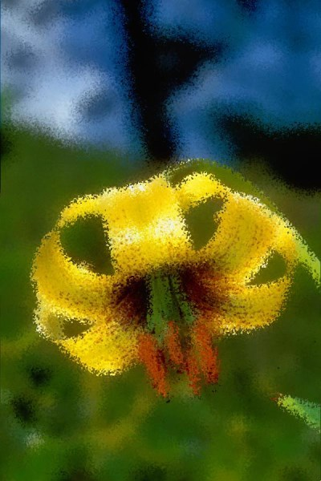
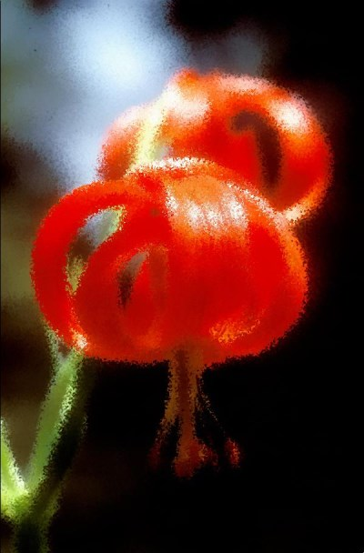
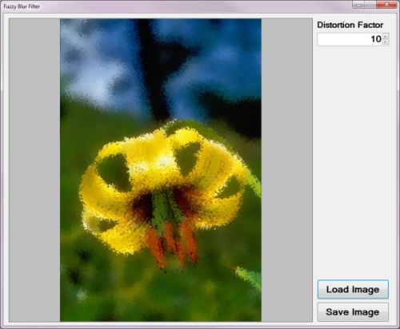
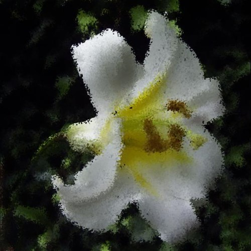
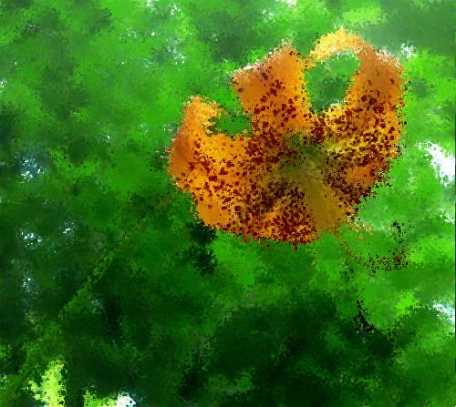
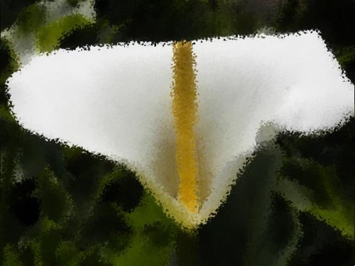
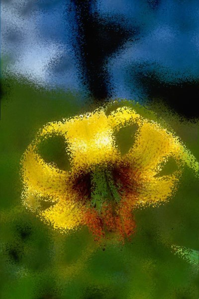
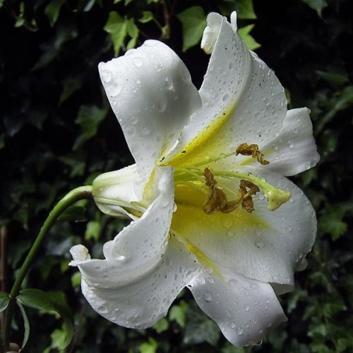
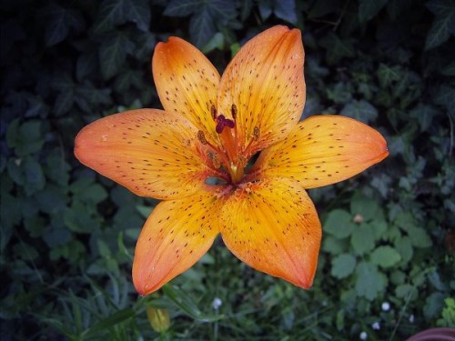
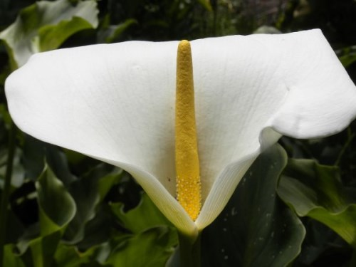

Image Distortion Blur
Introduction
This article explores the process of implementing an Image Distortion Blur filter. This image filter is classified as a non-photo realistic image filter, primarily implemented in rendering artistic effects.
Flower: Distortion Factor 15

Building the Sample
There are no special requirements or instructions for building the sample source code.
Flower: Distortion Factor 10

Using the Sample Application
The sample source code that accompanies this article includes a Windows Forms based sample application. The concepts explored in this article have all been implemented as part of the sample application. From an end user perspective the following configurable options are available:
- Load/Save Images – Clicking the Load Image button allows a user to specify a source/input image. If desired, output filtered images can be saved to the local file system by clicking the Save Image button.
- Distortion Factor – The level or intensity of image distortion applied when implementing the filter can be specified when adjusting the Distortion Factor through the user interface. Lower factor values result in less distortion being evident in resulting images. Specifying higher factor values result in more intense image distortion being applied.
The following image is screenshot of the Image Distortion Blur sample application:

Flower: Distortion Factor 10

Flower: Distortion Factor 10
Image Distortion
In this article and the accompanying sample source code images are distorted through slightly adjusting each individual pixel’s coordinates. The direction and distance by which pixel coordinates are adjusted differ per pixel as a result of being randomly selected. The maximum distance offset applied depends on the user specified Distortion Factor. Once all pixel coordinates have been updated, implementing a Median Filter provides smoothing and an image blur effect.
Applying an Image Distortion Filter requires implementing the following steps:
- Iterate Pixels – Each pixel forming part of the source/input image should be iterated.
- Calculate new Coordinates – For every pixel being iterated generate two random values representing XY-coordinate offsets to be applied to a pixel’s current coordinates. Offset values can equate to less than zero in order to represent coordinates above or to the left of the current pixel.
- Apply Median Filter – The newly offset pixels will appear somewhat speckled in the resulting image. Applying a Median Filter reduces the speckled appearance whilst retaining a distortion effect.
Flower: Distortion Factor 10

Flower: Distortion Factor 10
Median Filter
Applying a Median Filter is the final step required when implementing an Image Distortion Blur filter. Median Filters are often implemented in reducing image noise. The method of image distortion illustrated in this article express similarities when compared to image noise. In order to soften the appearance of image noise we implement a Median Filter.
A Median Filter can be applied through implementing the following steps:
- Iterate Pixels – Each pixel forming part of the source/input image should be iterated.
- Inspect Pixel Neighbourhood – Each neighbouring pixel in relation to the pixel currently being iterated should be added to a temporary collection.
- Determine Neighbourhood Median – Once all neighbourhood pixels have been added to a temporary collection, sort the collection by value. The element value located at the middle of the collection represents the pixel neighbourhood’s Median value.
Flower: Distortion Factor 10

Flower: Distortion Factor 15

Implementing Image Distortion
The sample source code defines the DistortionBlurFilter method, an extension method targeting the Bitmap class. The following code snippet illustrates the implementation:
public static Bitmap DistortionBlurFilter(
this Bitmap sourceBitmap, int distortFactor)
{
byte[] pixelBuffer = sourceBitmap.GetByteArray();
byte[] resultBuffer = sourceBitmap.GetByteArray();
int imageStride = sourceBitmap.Width * 4;
int calcOffset = 0, filterY = 0, filterX = 0;
int factorMax = (distortFactor + 1) * 2;
Random rand = new Random();
for (int k = 0; k + 4 < pixelBuffer.Length; k += 4)
{
filterY = distortFactor - rand.Next(0, factorMax);
filterX = distortFactor - rand.Next(0, factorMax);
if (filterX * 4 + (k % imageStride) < imageStride
&& filterX * 4 + (k % imageStride) > 0)
{
calcOffset = k + filterY * imageStride +
4 * filterX;
if (calcOffset >= 0 &&
calcOffset + 4 < resultBuffer.Length)
{
resultBuffer[calcOffset] = pixelBuffer[k];
resultBuffer[calcOffset + 1] = pixelBuffer[k + 1];
resultBuffer[calcOffset + 2] = pixelBuffer[k + 2];
}
}
}
return resultBuffer.GetImage(sourceBitmap.Width,
sourceBitmap.Height).MedianFilter(3);
}
public static Bitmap DistortionBlurFilter( this Bitmap sourceBitmap, int distortFactor) { byte[] pixelBuffer = sourceBitmap.GetByteArray(); byte[] resultBuffer = sourceBitmap.GetByteArray(); int imageStride = sourceBitmap.Width * 4; int calcOffset = 0, filterY = 0, filterX = 0; int factorMax = (distortFactor + 1) * 2; Random rand = new Random(); for (int k = 0; k + 4 < pixelBuffer.Length; k += 4) { filterY = distortFactor - rand.Next(0, factorMax); filterX = distortFactor - rand.Next(0, factorMax); if (filterX * 4 + (k % imageStride) < imageStride && filterX * 4 + (k % imageStride) > 0) { calcOffset = k + filterY * imageStride + 4 * filterX; if (calcOffset >= 0 && calcOffset + 4 < resultBuffer.Length) { resultBuffer[calcOffset] = pixelBuffer[k]; resultBuffer[calcOffset + 1] = pixelBuffer[k + 1]; resultBuffer[calcOffset + 2] = pixelBuffer[k + 2]; } } } return resultBuffer.GetImage(sourceBitmap.Width, sourceBitmap.Height).MedianFilter(3); }
Flower: Distortion Factor 15
Implementing a Median Filter
The MedianFilter extension method targets the Bitmap class. The implementation as follows:
public static Bitmap MedianFilter(this Bitmap sourceBitmap,
int matrixSize)
{
byte[] pixelBuffer = sourceBitmap.GetByteArray();
byte[] resultBuffer = new byte[pixelBuffer.Length];
byte[] middlePixel;
int imageStride = sourceBitmap.Width * 4;
int filterOffset = (matrixSize - 1) / 2;
int calcOffset = 0, filterY = 0, filterX = 0;
List<int> neighbourPixels = new List<int>();
for (int k = 0; k + 4 < pixelBuffer.Length; k += 4)
{
filterY = -filterOffset; filterX = -filterOffset;
neighbourPixels.Clear();
while (filterY <= filterOffset)
{
calcOffset = k + (filterX * 4) +
(filterY * imageStride);
if (calcOffset > 0 &&
calcOffset + 4 < pixelBuffer.Length)
{
neighbourPixels.Add(BitConverter.ToInt32(
pixelBuffer, calcOffset));
}
filterX++;
if (filterX > filterOffset)
{ filterX = -filterOffset; filterY++; }
}
neighbourPixels.Sort();
middlePixel = BitConverter.GetBytes(
neighbourPixels[filterOffset]);
resultBuffer[k] = middlePixel[0];
resultBuffer[k + 1] = middlePixel[1];
resultBuffer[k + 2] = middlePixel[2];
resultBuffer[k + 3] = middlePixel[3];
}
return resultBuffer.GetImage(sourceBitmap.Width,
sourceBitmap.Height);
}
public static Bitmap MedianFilter(this Bitmap sourceBitmap, int matrixSize) { byte[] pixelBuffer = sourceBitmap.GetByteArray(); byte[] resultBuffer = new byte[pixelBuffer.Length]; byte[] middlePixel; int imageStride = sourceBitmap.Width * 4; int filterOffset = (matrixSize - 1) / 2; int calcOffset = 0, filterY = 0, filterX = 0; List<int> neighbourPixels = new List<int>(); for (int k = 0; k + 4 < pixelBuffer.Length; k += 4) { filterY = -filterOffset; filterX = -filterOffset; neighbourPixels.Clear(); while (filterY <= filterOffset) { calcOffset = k + (filterX * 4) + (filterY * imageStride); if (calcOffset > 0 && calcOffset + 4 < pixelBuffer.Length) { neighbourPixels.Add(BitConverter.ToInt32( pixelBuffer, calcOffset)); } filterX++; if (filterX > filterOffset) { filterX = -filterOffset; filterY++; } } neighbourPixels.Sort(); middlePixel = BitConverter.GetBytes( neighbourPixels[filterOffset]); resultBuffer[k] = middlePixel[0]; resultBuffer[k + 1] = middlePixel[1]; resultBuffer[k + 2] = middlePixel[2]; resultBuffer[k + 3] = middlePixel[3]; } return resultBuffer.GetImage(sourceBitmap.Width, sourceBitmap.Height); }
Flower: Distortion Factor 25

Sample Images
This article features a number of sample images. All featured images have been licensed allowing for reproduction. The following images feature as sample images:
- Lilium chalcedonicum in habitat at Hrisomiglia, Greece.
- Attribution: Ernst Gügel. This file is licensed under the Creative Commons Attribution-Share Alike 3.0 Unported license.
- Download from Wikipedia
{kind=link}
- Lilium ponticum in habitat near Ikizdere, Turkey.
- Attribution: Ernst Gügel. This file is licensed under the Creative Commons Attribution-Share Alike 3.0 Unported license.
- Download from Wikipedia
{kind=link}

- Lilium sargentiae flora.
- Attribution: Denis Barthel. This file is licensed under the Creative Commons Attribution-Share Alike 3.0 Unported license.
- Download from Wikipedia
{kind=link}
.jpg)
- A lilium longiflorum, commonly known as an Easter Lily.
- Attribution: Matt H. Wade. This file is licensed under the Creative Commons Attribution-Share Alike 3.0 Unported license.
- Download from Wikipedia
.JPG){kind=link}

- Flora Lilium bulbiferum ssp. croceum, ex coll. Monte Adone, Bologna, Italia.
- Attribution: Denis Barthel. This file is licensed under the Creative Commons Attribution-Share Alike 3.0 Unported license.
- Download from Wikipedia
{kind=link}
- Turks Cap Lily the Great Smoky Mountains National Park in western North Carolina.
- Attribution: Arx Fortis. This file is licensed under the Creative Commons Attribution-Share Alike 3.0 Unported license.
- Download from Wikipedia
{kind=link}
- Orange Lily in full bloom showing pollen covered stamens, Ontario, Canada. June 2002.
- Attribution: Relic38. This file is licensed under the Creative Commons Attribution 3.0 Unported license.
- Download from Wikipedia
{kind=link}

- Zantedeschia aethiopica (common names calla lily, arum lily).
- Attribution: Two+two=4. This file has been released into the public domain. This applies worldwide.
- Download from Wikipedia
{kind=link}
Source Code Files
- ExtBitmap.cs - Contains the definition of the DistortionBlurFilter and MedianFilter extension methods.
- MainForm.cs - Windows Forms based sample application.
More Information
This article is based on an article originally posted on my blog: http://softwarebydefault.com/2013/08/09/image-distortion-blur/ If you have any questions/comments please feel free to make use of the Q&A section on this page, also please remember to rate this article.